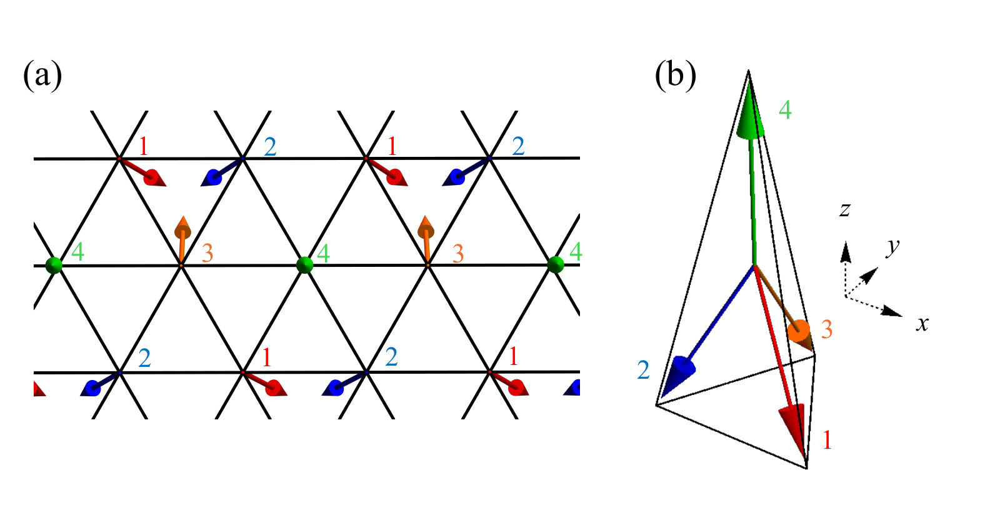
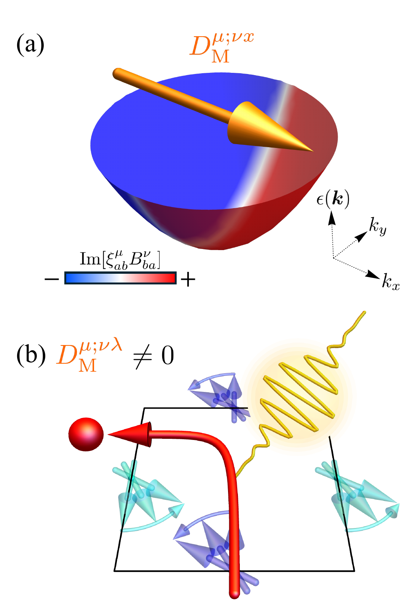
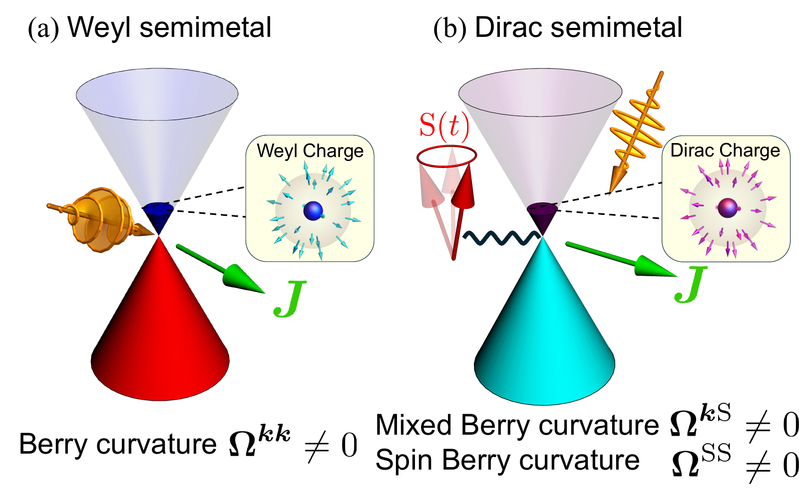
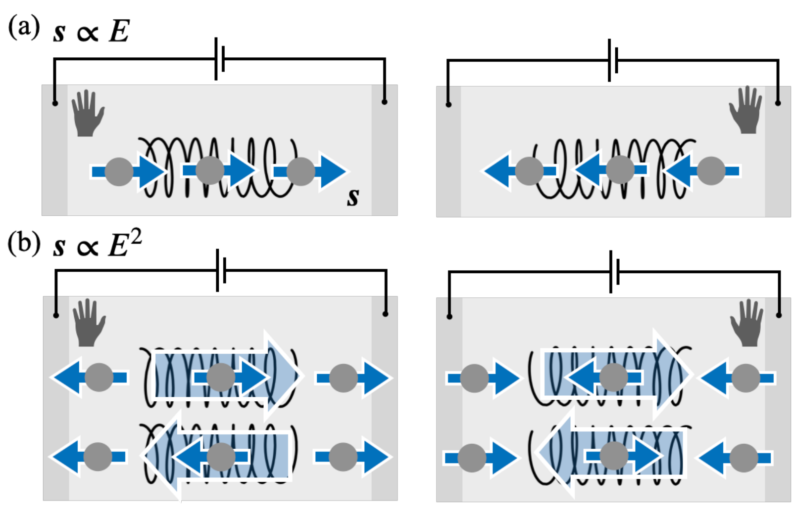

Research
研究Research
スピンダイナミクスと伝導電子の結合が生み出す現象を、理論と数値計算で調べています。Phenomena arising from the coupling between spin dynamics and conduction electrons, studied with theory and simulation.
Project 01
トポロジカル磁気構造と電子輸送Topological spin textures and electronic transport
近藤格子模型Kondo lattice model実時間シミュレーションReal-time simulationall-in/all-out 構造All-in/all-out order集団励起Collective excitations光学伝導度Optical conductivity
トポロジカル磁気構造と電子輸送Topological spin textures and electronic transport

磁性体の中には、スキルミオンや all-in/all-out 構造のように、スピンが空間的に複雑に並んだトポロジカルな磁気構造が現れます。こうした系では、局在スピンの集団励起と伝導電子が強く結びつき、電子の輸送や光学応答に影響を与えると考えられます。
Some magnets host topological spin textures, such as skyrmions and the all-in/all-out structure, in which spins are arranged in complex spatial patterns. In such systems, collective excitations of the localized spins couple strongly to conduction electrons and can affect electronic transport and optical responses.
本研究では、スピン・電荷結合系を速度ゲージで扱う効率的な実時間シミュレーション手法を開発し、複雑な磁気構造をもつ二次元系の計算を可能にしました。all-in/all-out 構造をとる三角格子上の近藤格子模型で線形光学伝導度を計算したところ、バンドギャップより低いエネルギー領域に、スキルミオン系と同様の集団モードの共鳴による複数のピークと、非共鳴なスピンダイナミクスによる広帯域の変化が現れることを見出しました。さらに、異なるスピン励起の寄与どうしの干渉を明らかにし、モードごとに電気的な活性が異なることを示しました。
We developed an efficient real-time simulation method for spin–charge coupled systems in the velocity gauge, enabling calculations for two-dimensional systems with complex spin textures. Computing the linear optical conductivity of the Kondo lattice model on the triangular lattice with all-in/all-out order, we found multiple peaks below the band gap arising from resonant collective modes, similar to skyrmionic systems, together with broadband modifications from off-resonant spin dynamics. We also clarified the interference between contributions from different spin excitations, revealing mode-dependent electrical activity.
関連する論文・発表Related papers & talks
- K. Hattori et al., Phys. Rev. B 110, 014425 (2024)
- arXiv:2404.05204
- APS Global Physics Summit 2025（口頭） / 日本物理学会 第79回年次大会（口頭）APS Global Physics Summit 2025 (oral) / 79th JPS Annual Meeting (oral)
Project 02
スピン起電力と非線形ホール効果Spin–charge-coupled motive force and the nonlinear Hall effect
PT 対称磁性体PT-symmetric magnets非線形ホール効果Nonlinear Hall effectスピンダイナミクスSpin dynamics混合双極子Mixed dipole
スピン起電力と非線形ホール効果Spin–charge-coupled motive force and the nonlinear Hall effect

空間反転と時間反転を組み合わせた PT 対称性をもつ磁性体は、空間反転対称性の破れによってスピンと電荷が結合したダイナミクスが豊かになることから、大きな注目を集めています。
Parity–time-reversal (PT) symmetric magnets have attracted much attention because broken inversion symmetry enriches their spin–charge coupled dynamics.
本研究では、実時間シミュレーションを用いて、局在スピンのダイナミクスが PT 対称磁性体の非線形ホール効果にどう影響するかを調べました。二次の光学応答の解析的な表式を導き、PT 対称性のもとでの変換性に基づいて寄与を分類することで、主要な項を特定しました。その結果、ベリー曲率双極子項に類似した「混合双極子効果」が大きな寄与を与えることを明らかにしました。
Using real-time simulations, we studied how localized spin dynamics affects the nonlinear Hall effect in PT-symmetric magnets. By deriving analytical expressions for the second-order optical response and classifying the contributions by their transformation properties under PT symmetry, we identified the leading-order term and showed that a sizable contribution comes from the mixed dipole effect, analogous to the Berry curvature dipole term.
関連する論文・発表Related papers & talks
- K. Hattori, H. Watanabe, and R. Arita, Phys. Rev. B 111, 174416 (2025)
- arXiv:2501.11234
- SCES 2025, Montréal（口頭）SCES 2025, Montréal (oral)
Project 03
反強磁性トポロジカル半金属のディラック電荷Dirac charge in antiferromagnetic topological semimetals
反強磁性ディラック半金属Antiferromagnetic Dirac semimetalsベリー曲率Berry curvature一般化パラメータ空間Generalized parameter space光電流Photocurrent
反強磁性トポロジカル半金属のディラック電荷Dirac charge in antiferromagnetic topological semimetals

ワイル半金属のワイル点がベリー曲率のモノポールとなるように、電子バンドのトポロジカルな節点は創発的な「電荷」の自由度をもつことがあり、特異な輸送現象や光学現象をもたらします。
Topological nodes of electronic bands can carry emergent charge degrees of freedom — such as the Berry curvature monopoles of Weyl semimetals — leading to intriguing transport and optical phenomena.
本研究では、反強磁性ディラック半金属に隠れた「ディラック電荷」の存在と、その光電流による検出を議論しました。スピンおよびスピン・電荷の混合パラメータ空間で定義したベリー曲率に着目し、ディラック電荷を一般化パラメータ空間におけるベリー曲率の湧き出し・吸い込みとして同定しました。さらに、ディラック電荷がスピン・電荷結合起電力によって駆動される光電流を通じて検出できることを示し、実時間シミュレーションにより、ディラック電荷が光電流の生成に重要な役割を果たすことを見出しました。
In this work, we discussed the existence of a hidden “Dirac charge” in antiferromagnetic Dirac semimetals and its detection via photocurrents. Using the Berry curvature defined in the spin and spin–charge mixed parameter spaces, we identified Dirac charges as sources or sinks of Berry curvature in the generalized parameter space. We showed that the Dirac charge can be detected through photocurrents driven by the spin–charge-coupled motive force, and real-time simulations revealed that it plays a significant role in photocurrent generation.
関連する論文・発表Related papers & talks
- K. Hattori, H. Watanabe, and R. Arita, Phys. Rev. Lett. 136, 046603 (2026)
- arXiv:2505.03191
- 招待講演（2026年10月） / APS Global Physics Summit 2026・SCES 2026（口頭） / 日本物理学会 学生優秀発表賞Invited talk (Oct 2026) / APS Global Physics Summit 2026 and SCES 2026 (oral) / JPS Student Presentation Award
Project 04
キラル系の反平行スピン偏極Antiparallel spin polarization in chiral systems
キラリティChirality反平行スピン偏極Antiparallel spin polarization非線形応答Nonlinear response非線形久保公式Nonlinear Kubo formula
キラル系の反平行スピン偏極Antiparallel spin polarization in chiral systems

キラリティ（掌性）に依存したスピンの生成は、物性物理学で大きな注目を集めています。
Chirality-dependent spin generation has attracted considerable attention in condensed matter physics.
本研究では、三角柱からなる有限サイズのキラル系を用いて、キラリティに依存した二次の応答としての反平行スピン偏極を理論的に調べました。非線形久保公式と実時間シミュレーションに基づき、一様な交流電場に対する散逸的な二次の直流応答として、空間的に非一様な反平行スピン偏極が誘起されることを示しました。特に、キラリティの掌性を特徴づける微視的パラメータの役割を明らかにし、スピン偏極をスピン流によるスピン蓄積の結果とみなす素朴な描像についても検討しました。
Using a finite chiral system composed of triangular prisms, we theoretically investigated antiparallel spin polarization as a chirality-dependent quadratic response. Based on the nonlinear Kubo formalism and real-time simulations, we showed that spatially inhomogeneous antiparallel spin polarizations are induced as a dissipative quadratic DC response to a homogeneous AC electric field. We also clarified the role of the microscopic parameters characterizing the handedness, and examined the naive picture of spin polarization as spin accumulation due to spin currents.
関連する論文・発表Related papers & talks
- A. Inda, K. Hattori, H. Kusunose, and S. Hayami, arXiv:2602.21718 (2026)
- 日本物理学会 第80回年次大会（口頭、印田氏発表）80th JPS Annual Meeting (oral, presented by A. Inda)